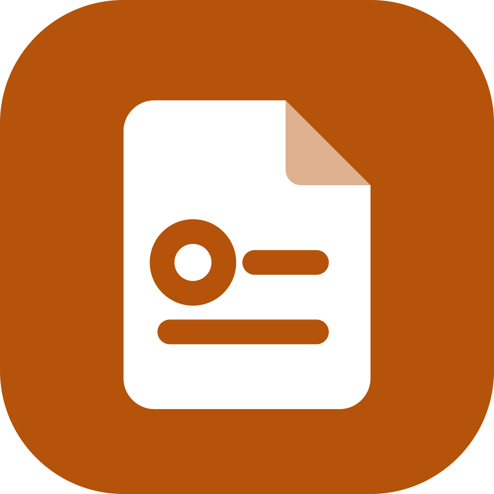
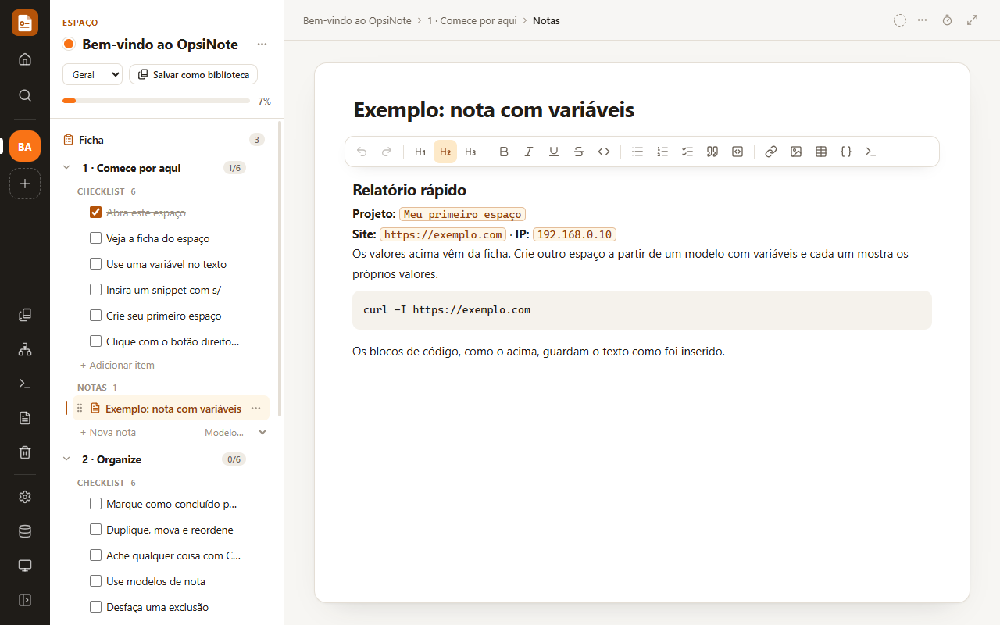

Manual do usuário: notas, checklists e acompanhamento de alvos de pentest, estudos, projetos e tarefas.
O OpsiNote é um aplicativo desktop para organizar notas, checklists e o acompanhamento de alvos de pentest, estudos, projetos e tarefas, tudo num lugar só e salvo no seu computador.
OpsiNote-Setup.exe na página de releases (ou pelo botão de download do README).Enquanto o instalador não for assinado com um certificado de assinatura de código, o Windows pode mostrar o aviso do SmartScreen. Clique em Mais informações → Executar assim mesmo.

Na primeira abertura, o espaço Bem-vindo ao OpsiNote é um tour para fazer usando o próprio app: tem uma ficha com variáveis de exemplo, um item que mostra uma variável ao vivo e passos para cada recurso.
Para refazê-lo, use Fazer o tour de boas-vindas na Ajuda (F1) ou o comando na busca (Ctrl+K).
O que você está acompanhando: um alvo, uma matéria, um projeto, uma lista de tarefas.
Dividem o espaço. Cada seção tem um checklist e notas.
Checklists reutilizáveis, que viram espaços novos.
Estruturas prontas: relatório de vulnerabilidade, resumo de estudo, ata.
Trechos de texto copiados com um clique, com variáveis.
Os dados do espaço (alvo, curso, repositório…) e suas variáveis.
Cada espaço tem seções, e cada seção tem um checklist (os itens, que podem ser marcados como concluídos) e notas. O progresso do espaço é calculado a partir dos itens concluídos.
Itens podem ter subitens, que aparecem recuados embaixo deles na árvore (menu ⋯ do item → Adicionar subitem). Subitens não são tarefas: não têm caixa de marcar e não contam no progresso.
A ficha é a primeira linha da árvore de cada espaço, com campos conforme a categoria. Todas guardam as variáveis usadas nos snippets e um período.
| Categoria | Ficha | Campos |
|---|---|---|
| Pentest | Ficha do alvo | Alvo, IP, domínio, URL; engajamento, escopo e contatos |
| Estudo | Ficha de estudo | Tema, curso; data da prova/meta, objetivo, materiais e rotina |
| Projeto | Ficha do projeto | Repositório, URL; entrega, objetivo, links e pessoas |
| Tarefas e Geral | Ficha | Prazo e um campo de contexto/anotações |
Ao trocar a categoria, os campos da anterior ficam guardados e voltam se você trocar de volta.
A seção Snippets da ficha lista todos os snippets já preenchidos com as variáveis dela, para copiar com um clique. Uma variável que falta pode ser criada ali mesmo.
Bibliotecas são checklists reutilizáveis. Crie um espaço a partir de uma biblioteca, ou salve um espaço como biblioteca para reaproveitar o roteiro depois.
Modelos de nota são estruturas prontas para novas notas, como um relatório de vulnerabilidade, um resumo de estudo ou uma ata de reunião.
Escreva um comando ou trecho uma vez, com variáveis no lugar dos valores, e o OpsiNote preenche com os dados do espaço aberto.
Snippets são trechos de texto copiados com um clique. Podem ter variáveis entre chaves duplas, preenchidas ao copiar:
nmap -sV {{ip}}Também podem ser inseridos no texto:
s/ numa nota, item, modelo ou campo da ficha (ou use o botão de terminal).Nas notas, o snippet entra como bloco de código, com as variáveis já preenchidas pela ficha do espaço. Nos modelos e nas bibliotecas, as {{variáveis}} ficam como estão.
Em Configurações → Snippets você escolhe de qual espaço vêm os valores das variáveis ao copiar um snippet pela tela de Snippets. Nas notas, o snippet inserido com s/ e as variáveis inseridas com / sempre usam a ficha do próprio espaço. Com um snippet aberto, Ctrl+Shift+C copia com as variáveis preenchidas.
/ numa nota ou item (ou use o botão { }).Ela aparece como uma etiqueta com o valor atual e acompanha a ficha: mudou o valor lá, muda em todas as notas.
{{chave}} e ganha o valor quando a nota estiver num espaço.{{chave}} (a ficha vai junto).{{chave}} fora de código volta como variável.Num espaço de pentest, preencha ip na ficha do alvo. Todos os snippets como nmap -sV {{ip}} e todas as notas com a variável ip passam a mostrar o endereço certo. Trocou de alvo? Mude a ficha e tudo acompanha.
Itens, notas, seções, snippets, modelos e espaços podem ser duplicados e movidos pelo menu ⋯ de cada linha.
Clicar com o botão direito num espaço (no trilho ou no Início) ou numa biblioteca abre as ações dele:
Pelo teclado, use a tecla de menu ou Shift+F10.
Espaços, itens, notas e snippets podem ser fixados no topo (menu ⋯ ou botão direito → Fixar no topo). Eles aparecem primeiro nas listas e no trilho, na seção Fixados do Início e na busca antes de digitar.
A ordem guardada não muda: desafixar devolve o item ao lugar.
O que você exclui vai para a lixeira, de onde pode ser restaurado por 30 dias. Logo depois de excluir, o aviso tem um botão Desfazer.
Cada espaço tem o seu mapa mental: o espaço no centro, as seções nos ramos e as tarefas e notas nos tópicos. O mapa e o espaço andam juntos.
Abra pelo ícone no trilho ou por Ver mapa mental no menu de um espaço ou biblioteca.
| Criar um tópico embaixo de… | Cria no espaço |
|---|---|
| a raiz | uma seção |
| uma seção | uma tarefa |
| uma tarefa | um subitem dela |
| um tópico solto | nada (fica só no mapa) |
Renomear, marcar, reordenar, mudar de ramo ou excluir (os itens vão para a lixeira) também muda o espaço, e o que muda no espaço aparece no mapa. Tópicos soltos que já estavam embaixo de seções e tarefas (de mapas da versão anterior) viram itens do espaço ao abrir o mapa.
| Tecla | O que faz |
|---|---|
| Duplo clique ou F2 | Muda o texto |
| Tab | Cria um filho |
| Enter | Cria um irmão |
| Delete | Exclui (com Desfazer) |
| Espaço | Recolhe ou expande |
| Setas | Navegam entre os tópicos |
| Ctrl+↑ / Ctrl+↓ | Reordenam |
| Ctrl+Z / Ctrl+Y | Desfazem e refazem, inclusive o que mudou no espaço |
| Ctrl+Enter | Marca a tarefa como concluída |
As tarefas também têm a caixa de marcar no próprio balão, e cada ramo mostra quantas tarefas estão feitas.
O mapa vai junto nos backups, na importação, ao duplicar o espaço e ao salvá-lo como biblioteca.
O botão de relógio na barra do documento começa uma sessão de 15, 25, 50 ou 90 minutos e entra no modo foco, ou uma pausa de 5 ou 15.
O modo foco (Ctrl+Shift+F) mostra só o documento; Esc sai.
Em Configurações → Geral:
Vale nos temas claro e escuro e vai junto no backup.
A engrenagem no trilho (Ctrl+,) reúne: tema, menu lateral, espaço usado pelos snippets, dados e backup, atalhos (personalizáveis), Ajuda com exemplos práticos de uso e a versão do app.
| Atalho | O que faz |
|---|---|
| Ctrl+K | Busca em tudo (títulos e conteúdo) e executa comandos |
| Ctrl+/ | Lista todos os atalhos |
| Ctrl+, | Abre as configurações |
| F1 | Abre a ajuda (guia de uso com exemplos práticos) |
| Ctrl+Shift+N | Novo espaço |
| Ctrl+\ | Expande ou recolhe o menu |
| Ctrl+Shift+F | Modo foco (só o documento); Esc sai |
| Alt+↑ / Alt+↓ | Item anterior / próximo da árvore |
| Ctrl+Enter | Marca o item aberto como concluído ou pendente |
| Ctrl+Shift+D | Duplica o item, nota, snippet ou modelo aberto |
| Ctrl+Shift+C | Copia o snippet aberto com as variáveis preenchidas |
| Shift+F10 | Abre o menu de contexto do espaço ou biblioteca selecionado |
| Ctrl + clique | Abre um link da nota no navegador |
Em Configurações → Atalhos, clique num atalho e pressione a nova combinação (Esc cancela). Cada um também pode ser removido ou voltar ao padrão. Os atalhos personalizados ficam salvos junto com os dados.
O app recusa, explicando o motivo:
@, €, /…).Esc para sair do modo foco é fixo.
Tudo é salvo automaticamente em opsinote-data.json, na pasta de dados do usuário (no Windows, %APPDATA%\OpsiNote). Uma cópia .bak da versão anterior é mantida a cada gravação.
Use o menu Dados (ícone de banco de dados no trilho). Você escolhe o que entra no arquivo (espaços, bibliotecas, modelos e grupos de snippets, um a um) e, se quiser, zera os checklists para compartilhar um roteiro sem o seu progresso.
| Formato | Para quê | Ao importar de volta |
|---|---|---|
Backup do OpsiNote (.json) | Levar tudo para outro computador | Sem perdas |
Página HTML (.html) | Ler no navegador ou imprimir em PDF | Sem perdas (os dados vão embutidos) |
Markdown (.md) | Obsidian, Notion, GitHub, qualquer editor | Mantém estrutura, ficha, cores e formatação |
Planilha CSV (.csv) | Excel ou Google Planilhas, uma linha por item | Mantém itens, conclusão e variáveis; sem imagens |
Texto simples (.txt) | Colar em qualquer lugar | Mantém a estrutura; sem formatação nem imagens |
Usa ; como separador e é salvo em UTF-8 com BOM, que é o que o Excel em português abre direto. Células que começam com =, +, - ou @ ganham um ' na frente, para o Excel não executá-las como fórmula (um payload nas notas não vira ataque a quem abre a planilha). A importação tira o ' de volta.
Importar aceita todos esses formatos, um ou vários arquivos de uma vez, e acrescenta o conteúdo ao que já existe. Arquivos de outros apps também entram:
| Formato | Como vira conteúdo do OpsiNote |
|---|---|
| Markdown | # vira espaço, ## seção, ### nota e - [ ] / - [x] itens do checklist. Um arquivo sem títulos vira uma nota com o nome do arquivo. |
| HTML | Uma página qualquer vira uma nota, sem scripts, estilos nem eventos. |
| CSV | Cada linha vira um item do checklist, com as outras colunas no conteúdo. Uma coluna como Status ou Concluído marca o item. |
| Texto | Linhas [ ] / [x] viram itens do checklist e o resto, uma nota. |
As imagens coladas nas notas ficam em %APPDATA%\OpsiNote\attachments, uma vez só por imagem, e o JSON guarda apenas o endereço delas. Isso mantém o salvamento rápido mesmo com muitas capturas de tela.
O app nunca busca imagens na internet: ao colar conteúdo de um site, as imagens remotas viram um link para o endereço delas ([imagem externa] https://…). Assim, abrir uma nota não revela seu IP nem o horário de leitura ao site de origem.
Requer Node.js 20 ou mais recente.
npm install
npm run dev| Comando | O que faz |
|---|---|
npm run build | Gera a versão de produção em out/ |
npm run preview | Abre a versão de produção |
npm run typecheck | Verifica os tipos do TypeScript |
npm test | Roda os testes automatizados (npm run test:watch para rodar a cada alteração) |
npm run package:win | Gera o instalador para Windows em release/ |
npm run docs:pdf | Gera este manual (docs/OpsiNote-Manual.pdf) a partir de docs/manual/manual.html |
As releases são montadas pelo GitHub Actions (.github/workflows/release.yml). Para lançar uma versão:
npm version minor # ou patch (correções) / major: muda o package.json, faz o commit e cria a tag
git push --follow-tags # envia o commit e a tagA tag v* enviada dispara o workflow, que confere se a tag bate com o package.json, roda o typecheck e os testes, gera o instalador do Windows e cria a release com as notas geradas a partir dos commits. Acompanhe em Actions no GitHub; se algo falhar, nada é publicado, e os arquivos gerados ficam para baixar na página da execução. Tags com hífen (v0.2.0-beta.1) viram pré-release.
Cada release leva quatro arquivos:
OpsiNote-Setup-<versão>.exe: o instalador;latest.yml e o .blockmap: usados pela atualização automática;OpsiNote-Setup.exe: cópia do instalador com nome fixo para o botão de download do README (releases/latest/download/OpsiNote-Setup.exe sempre aponta para a versão mais recente).O app instalado procura versões novas nas releases deste repositório (bloco publish do electron-builder.yml). Para gerar o instalador no seu computador, sem publicar: npm run package:win.
O desenho original é build/icon.svg. Dele saem build/icon.png (512 px, para Linux e macOS) e build/icon.ico (Windows, com cada tamanho de 16 a 256 px desenhado do SVG, e não reduzido, para ficar nítido na barra de tarefas). Se mudar o SVG, gere os dois de novo.
No Windows, o ícone da barra de tarefas vem da identidade do app (AppUserModelID), não da janela, e o Windows guarda esse ícone em cache por id. Por isso o app instalado usa app.opsinote.notes (o appId do electron-builder.yml) e o de desenvolvimento usa app.opsinote.notes.dev: se os dois dividissem o id, o ícone do electron.exe ficaria preso ao app instalado.
Para o Windows não mostrar o aviso do SmartScreen, o instalador precisa ser assinado com um certificado de assinatura de código. Com o certificado em mãos, defina CSC_LINK (caminho do .pfx) e CSC_KEY_PASSWORD antes de gerar o instalador; o electron-builder assina sozinho.
src/
main/ processo principal do Electron (janela, arquivos, imagens, atualização)
preload/ ponte segura entre a janela e o processo principal
renderer/ interface em React
src/components/ telas e componentes
src/lib/ lógica sem interface: lixeira, mover/duplicar, busca, variáveis, atalhos,
importação e exportação nos vários formatos, HTML ↔ Markdown
(cada uma com seu arquivo .test.ts)
src/store.ts estado do app (Zustand)GPL-3.0. Este projeto é derivado de um trabalho de código aberto distribuído sob a GNU General Public License v3.0.